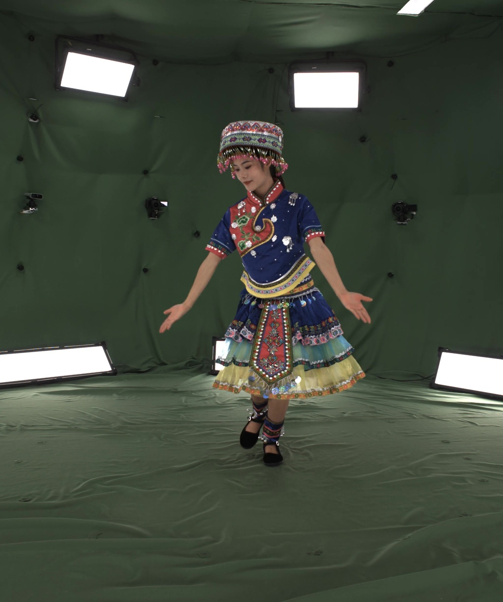
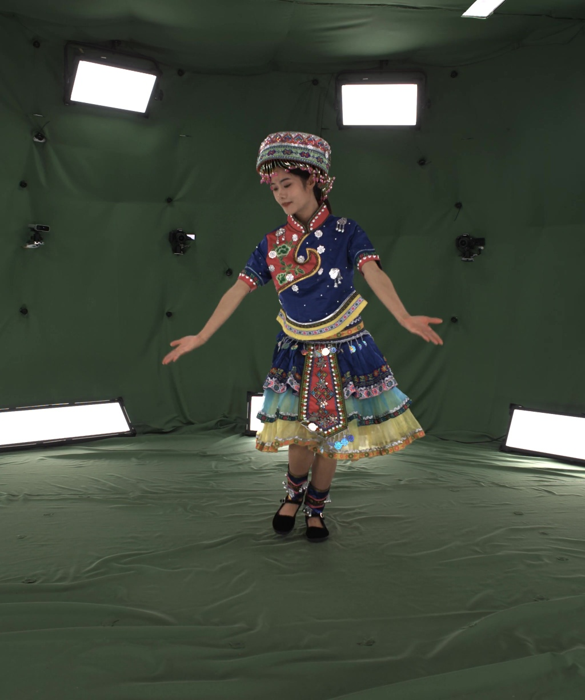

Retiming
In film production, retiming allows directors to precisely adjust the temporal flow of scenes, which allows control over motion and narrative pacing without losing visual quality.
Temporal retiming, the ability to reconstruct and render dynamic scenes at arbitrary timestamps, is crucial for applications such as slow-motion playback, temporal editing, and post-production. However, most existing 4D Gaussian Splatting (4DGS) methods overfit at discrete frame indices but struggle to represent continuous-time frames, leading to ghosting artifacts when interpolating between timestamps.

GT(t0)

GT(t1)
Ours
Native 4D Primitive-based
Deform-based
We identify this limitation as a form of temporal aliasing and propose RetimeGS, a simple yet effective 4DGS representation that explicitly defines the temporal behavior of the 3D Gaussian and mitigates temporal aliasing. To achieve smooth and consistent interpolation, we incorporate optical flow–guided initialization and supervision, triple-rendering supervision, and other targeted strategies. Together, these components enable ghost-free, temporally coherent rendering even under large motions. Experiments on datasets featuring fast motion, non-rigid deformation, and severe occlusions demonstrate that RetimeGS achieves superior quality and coherence over state-of-the-art methods.

In film production, retiming allows directors to precisely adjust the temporal flow of scenes, which allows control over motion and narrative pacing without losing visual quality.
Slow motion effects are important in cinematography for capturing dramatic moments and revealing details invisible to the human eye.
Using nerfies you can create fun visual effects. This Dolly zoom effect would be impossible without nerfies since it would require going through a wall.
As a byproduct of our method, we can also solve the matting problem by ignoring samples that fall outside of a bounding box during rendering.
We can also animate the scene by interpolating the deformation latent codes of two input frames. Use the slider here to linearly interpolate between the left frame and the right frame.

Start Frame

End Frame
Using Nerfies, you can re-render a video from a novel viewpoint such as a stabilized camera by playing back the training deformations.
There's a lot of excellent work that was introduced around the same time as ours.
Progressive Encoding for Neural Optimization introduces an idea similar to our windowed position encoding for coarse-to-fine optimization.
D-NeRF and NR-NeRF both use deformation fields to model non-rigid scenes.
Some works model videos with a NeRF by directly modulating the density, such as Video-NeRF, NSFF, and DyNeRF
There are probably many more by the time you are reading this. Check out Frank Dellart's survey on recent NeRF papers, and Yen-Chen Lin's curated list of NeRF papers.
@article{park2021nerfies,
author = {Park, Keunhong and Sinha, Utkarsh and Barron, Jonathan T. and Bouaziz, Sofien and Goldman, Dan B and Seitz, Steven M. and Martin-Brualla, Ricardo},
title = {Nerfies: Deformable Neural Radiance Fields},
journal = {ICCV},
year = {2021},
}